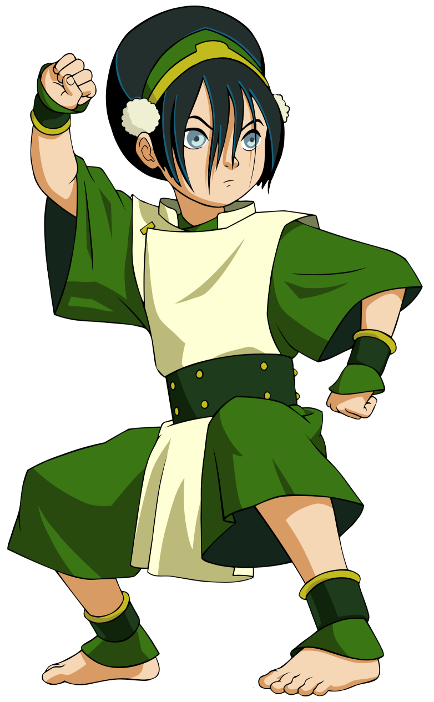

Meet the Characters

Toph
Toph Beifong was among the most powerful earthbenders in the world. Toph was born blind and was treated differently because of her impairment. However, her blindness turned out to be a boon when she discovered the ability to "see" using earthbending to sense vibrations in the ground. She was also the first earthbender to learn the extension of "metalbending". Unbeknownst to her parents, Toph was also known as the "Blind Bandit" due to her reputation in underground earthbending competitions. She was initially disinterested in Aang's quest to save the world, but decided to join due to her overprotective parents. Toph travelled with Aang and his friends as Aang's earthbending coach.